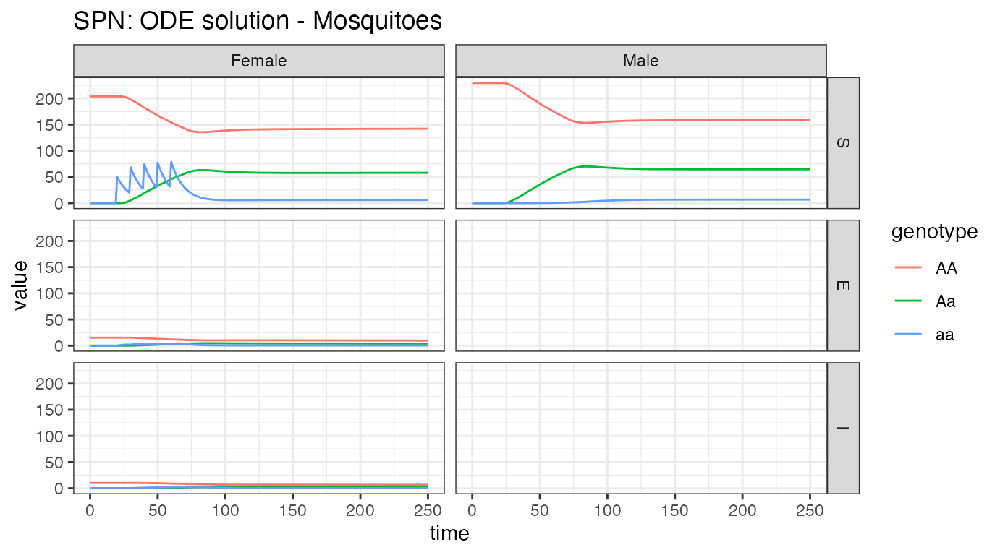
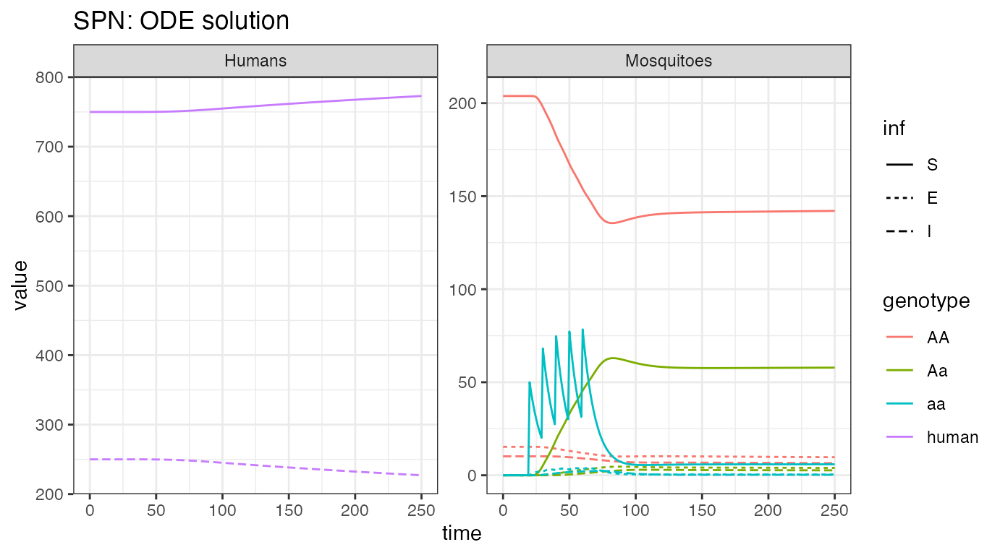
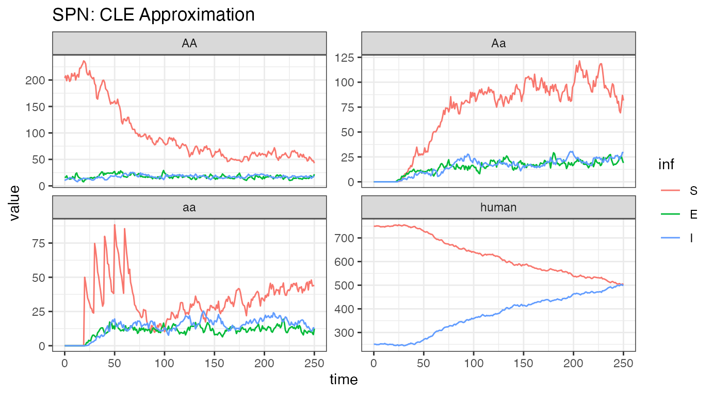

Table of Contents
- Parameterization
- Initialization of the Petri Net
- Equilibrium Conditions and Hazard Functions
- Simulation of Fully Specified SPN Model
- References
Preface
In this vignette, we show how to set up and run MGDrivE2 simulations that utilize the SEI (Susceptible-Exposed-Infectious) mosquito model of epidemiological dynamics coupled to the SIS (Susceptible-Infectious-Susceptible) human model of epidemiological dynamics. The SEI mosquito model uses an Erlang-distributed incubation (E) period to approximate general non-exponential dwell times in the E state. The SIS human model on the other hand, is a deliberate simplifying caricature of infection dynamics in the human population; despite this, it is widely used and provides a useful base case due to analytically tractable dynamics as well as a foundation from which more complex models can be built. This vignette shows examples of transmission dynamics interacting with population genetic dynamics in a single well-mixed node.
We start by loading the MGDrivE2 package, as well as the MGDrivE package for access to inheritance cubes and ggplot2 for graphical analysis. We will use the basic cube to simulate Mendelian inheritance for this example.
Parameterization
Several parameters are necessary to setup the structural properties
of the Petri Net, as well as calculate the population distribution at
equilibrium, setup initial conditions, and calculate hazards. Again, we
specify all entomological parameters as for the mosquito-only simulation
(see “MGDrivE2: One Node Lifecycle
Dynamics”) as well as additional parameters for the
SEI-SIS dynamics. Like the aquatic stages,
will give the mean dwell time for incubating mosquitoes, and variance by
.
The model requires muH, mortality rate in humans, because
equilibrium dynamics are simulated (that is, human populations follow an
“open cohort” with equal birth and death rates). A table of
(case-sensitive) epidemiological parameters the user needs to specify is
given below. Note that all parameters must be specified as a rate per
day. For a detailed discussion of these parameters in the context of
malaria models, see Smith and McKenzie (2004).
| Parameter | Description |
|---|---|
NH |
total human population size |
X |
equilibrium prevalence of disease in humans |
f |
mosquito feeding rate |
Q |
proportion of blood meals taken on humans (human blood index in field literature) |
b |
mosquito to human transmission efficiency |
c |
human to mosquito transmission efficiency |
r |
rate of recovery in humans |
muH |
mortality rate in humans |
qEIP |
inverse of mean duration of EIP |
nEIP |
shape parameter of Erlang-distributed EIP |
Please note that f and Q must be specified;
this is because future versions of MGDrivE2 will
include additional vector control methods such as IRS (indoor residual
spraying) and ITN (insecticide treated nets). In the presence of
ITNs/IRS f will vary independently as a function of time
depending on intervention coverage.
Additionally, we specify a total simulation length of 300 days, with output stored daily.
# entomological and epidemiological parameters
theta <- list(
# lifecycle parameters
qE = 1/4,
nE = 2,
qL = 1/3,
nL = 3,
qP = 1/6,
nP = 2,
muE = 0.05,
muL = 0.15,
muP = 0.05,
muF = 0.09,
muM = 0.09,
beta = 16,
nu = 1/(4/24),
# epidemiological parameters
NH = 1000,
X = 0.25,
f = 1/3,
Q = 0.9,
b = 0.55,
c = 0.15,
r = 1/200,
muH = 1/(62*365),
qEIP = 1/11,
nEIP = 6
)
# simulation parameters
tmax <- 250
dt <- 1We also need to augment the cube with genotype specific transmission
efficiencies; this allows simulations of gene drive systems that confer
pathogen-refractory characteristics to mosquitoes depending on genotype.
The specific parameters we want to attach to the cube are b
and c, the mosquito to human and human to mosquito
transmission efficiencies. We assume that transmission from human to
mosquito is not impacted in modified mosquitoes, but mosquito to human
transmission is significantly reduced in modified mosquitoes. For
detailed descriptions of these parameters for modelling malaria
transmission, see Smith & McKenzie (2004) for extensive
discussion.
Initialization of the Petri Net
The SEI-SIS disease transmission model sits “on top”
of the existing MGDrivE2 structure, using the default
aquatic and male “places”, but expanding adult female “places” to follow
an Erlang-distributed pathogen incubation period (called the extrinsic
incubation period, EIP) and adding SIS
human states as well. Information on how to choose the proper
EIP distribution can be found in the help file for
?makeQ_SEI().
The transitions between states is also expanded, providing
transitions for females to progress in infection status, adding human
dynamics, and allowing interaction between mosquito and human states.
All of these additions are handled internally by
spn_T_epiSIS_node().
# Places and transitions
SPN_P <- spn_P_epiSIS_node(params = theta, cube = cube)
SPN_T <- spn_T_epiSIS_node(spn_P = SPN_P, params = theta, cube = cube)
# Stoichiometry matrix
S <- spn_S(spn_P = SPN_P, spn_T = SPN_T)Equilibrium Conditions and Hazard Functions
Now that we have set up the structural properties of the Petri Net, we need to calculate the population distribution at equilibrium and define the initial conditions for the simulation.
The function equilibrium_SEI_SIS() calculates the
equilibrium distribution of female mosquitoes across
SEI stages, based on human populations and
force-of-infection, then calculates all other equilibria. We set the
logistic form for larval density-dependence in these examples by specify
log_dd = TRUE.
# SEI mosquitoes and SIS humans equilibrium
# outputs required parameters in the named list "params"
# outputs initial equilibrium for adv users, "init
# outputs properly filled initial markings, "M0"
initialCons <- equilibrium_SEI_SIS(params = theta, phi = 0.5, log_dd = TRUE,
spn_P = SPN_P, cube = cube)With the equilibrium conditions calculated (see
?equilibrium_SEI_SIS()), and the list of possible
transitions provided by spn_T_epiSIS_node(), we can now
calculate the rates of those transitions between states.
# approximate hazards for continuous approximation
approx_hazards <- spn_hazards(spn_P = SPN_P, spn_T = SPN_T, cube = cube,
params = initialCons$params, type = "SIS",
log_dd = TRUE, exact = FALSE, tol = 1e-8,
verbose = FALSE)Simulation of Fully Specified SPN Model
Similar to previous simulations, we will release 50 adult females
with homozygous recessive alleles 5 times, every 10 days, but starting
at day 20. Remember, it is critically important that the event
names match a place name in the simulation. The simulation
function checks this and will throw an error if the event name does not
exist as a place in the simulation. This format is used in
MGDrivE2 for consistency with solvers in
deSolve.
# releases
r_times <- seq(from = 20, length.out = 5, by = 10)
r_size <- 50
events <- data.frame("var" = paste0("F_", cube$releaseType, "_", cube$wildType, "_S"),
"time" = r_times,
"value" = r_size,
"method" = "add",
stringsAsFactors = FALSE)Deterministic: ODE Solutions
As in the “MGDrivE2: One Node Lifecycle
Dynamics” vignette, we will first numerically simulate the
mean-field ODE approximation to the stochastic trajectory, using the
approximate hazards suitable for continuous-state approximation (see
?spn_hazards()). Internally, MGDrivE2 uses
the high quality numerical solvers in from deSolve to
integrate a mean-field approximation to the stochastic model. We also
plot the adult mosquito and human dynamics to see the impact on disease
incidence in humans as our released allele spreads through the
mosquitoes.
# run deterministic simulation
ODE_out <- sim_trajectory_R(x0 = initialCons$M0, tmax = tmax, dt = dt, S = S,
hazards = approx_hazards, sampler = "ode", method = "lsoda",
events = events, verbose = FALSE)
# summarize females/males by genotype
ODE_female <- summarize_females_epi(out = ODE_out$state, spn_P = SPN_P)
ODE_male <- summarize_males(out = ODE_out$state)
# add sex for plotting
ODE_female$sex <- "Female"
ODE_male$sex <- "Male"
ODE_male$inf <- "S"
# plot
ggplot(data = rbind(ODE_female, ODE_male)) +
geom_line(aes(x = time, y = value, color = genotype)) +
facet_grid(inf ~ sex, scales = "fixed") +
theme_bw() +
ggtitle("SPN: ODE solution - Mosquitoes")
The most obvious point of these plots is that males never exhibit latent or infectious stages. As males do not bite humans, and vertical transmission of most diseases is exceedingly rare or unknown, male mosquitoes do not participate in epidemiological dynamics. Looking at the females, we see our releases, starting at day 50, in the susceptible compartment. Notice that it takes a very low proportion of latent/infected female mosquitoes to contribute to disease incidence in humans. However, it is clear that disease incidence is reduced after releases of modified, and thus non-transmitting, mosquitoes.
Further, we can observe the disease dynamics in female mosquitoes and compare that to what is happening in the human population.
# summarize females/humans by genotype
ODE_female <- summarize_females_epi(out = ODE_out$state, spn_P = SPN_P)
ODE_humans <- summarize_humans_epiSIS(out = ODE_out$state)
# add species for plotting
ODE_female$species <- "Mosquitoes"
ODE_humans$species <- "Humans"
# plot
ggplot(data = rbind(ODE_female,ODE_humans) ) +
geom_line(aes(x = time, y = value, color = genotype, linetype = inf)) +
facet_wrap(. ~ species, scales = "free_y") +
theme_bw() +
ggtitle("SPN: ODE solution")
We see the initial equilibrium of SEI mosquitoes and SIS humans. Then, as releases are performed, we see disease incidence fall quickly in mosquitoes and that slowly impact incidence in humans.
Stochastic: Chemical Langevin Equation Solutions
As a further example, we run a single stochastic realization of the
same simulation, using the cle sampler with
,
approximating 10 jumps per day. As the adult male mosquitoes do not
contribute to infection dynamics, we will only view the adult female
mosquito and human dynamics here.
# delta t
dt_stoch <- 0.1
# run CLE simulation
CLE_out <- sim_trajectory_R(x0 = initialCons$M0, tmax = tmax, dt = dt,
dt_stoch = dt_stoch, S = S, hazards = approx_hazards,
sampler = "cle", events = events, verbose = FALSE)
# summarize females/humans by genotype
CLE_female <- summarize_females_epi(out = CLE_out$state, spn_P = SPN_P)
CLE_humans <- summarize_humans_epiSIS(out = CLE_out$state)
# plot
ggplot(data = rbind(CLE_female,CLE_humans) ) +
geom_line(aes(x = time, y = value, color = inf)) +
facet_wrap(~ genotype, scales = "free_y") +
theme_bw() +
ggtitle("SPN: CLE Approximation")
Analyzing one stochastic realization of this system, we see some similarities and some striking differences. The releases are clearly visible, lower left-hand plot, and we see that the initial dynamics are similar to the ODE dynamics. However, it is quickly apparent that the releases are not reducing transmission adequately, that in fact, disease incidence is increasing rapidly in human and female mosquitoes. There are two main possibilities for this: first, that the stochastic simulation just happens to drift like this, a visual reminder that there can be significant differences when the well-mixed, mean-field assumptions are relaxed, or that the step size () is too large, and the stochastic simulation is a poor approximation of the ODE solution. Further tests, with and , returned similar results, indicating that this is an accurate approximation but still highlighting the importance of testing several values of for consistency.